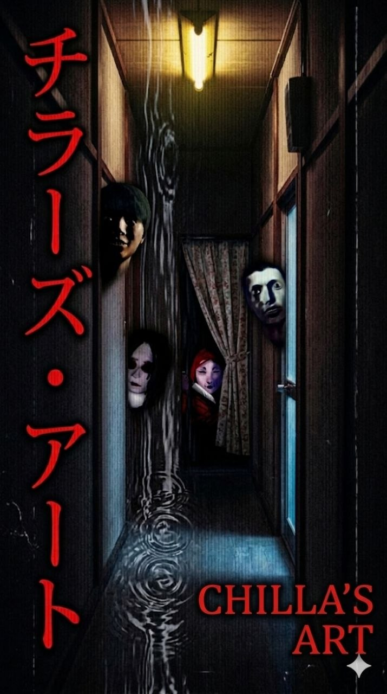
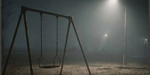

Студія Chilla’s Art — це японські розробники інді-хорорів, які перетворюють звичайні життєві ситуації на справжній психологічний жах. Їхні ігри відомі своєю атмосферою, VHS-естетикою та відчуттям постійної тривоги, яке не відпускає до самого фіналу.
У світі Chilla’s Art навіть звичайна нічна зміна в кав’ярні, поїздка потягом чи повернення додому можуть приховувати щось моторошне. Саме завдяки увазі до деталей, тиші та напрузі студія здобула популярність серед фанатів хорорів у всьому світі.
Кожна гра створює унікальне відчуття самотності та невідомості. Гравець поступово помічає дивні речі навколо себе, а атмосфера стає дедалі більш напруженою. Замість великої кількості скрімерів Chilla’s Art робить ставку на психологічний тиск і страх невідомого.
Chilla's Art використовують це майже у всіх іграх
Класичний ефект старої плівки додає ностальгії та робить кожен кадр більш непередбачуваним.

Порожні кав'ярні та нічні вулиці створюють відчуття ізоляції, де за кожним кутом хтось стежить.
Замість звичайних скримерів — постійне відчуття небезпеки та майстерна робота зі звуком.